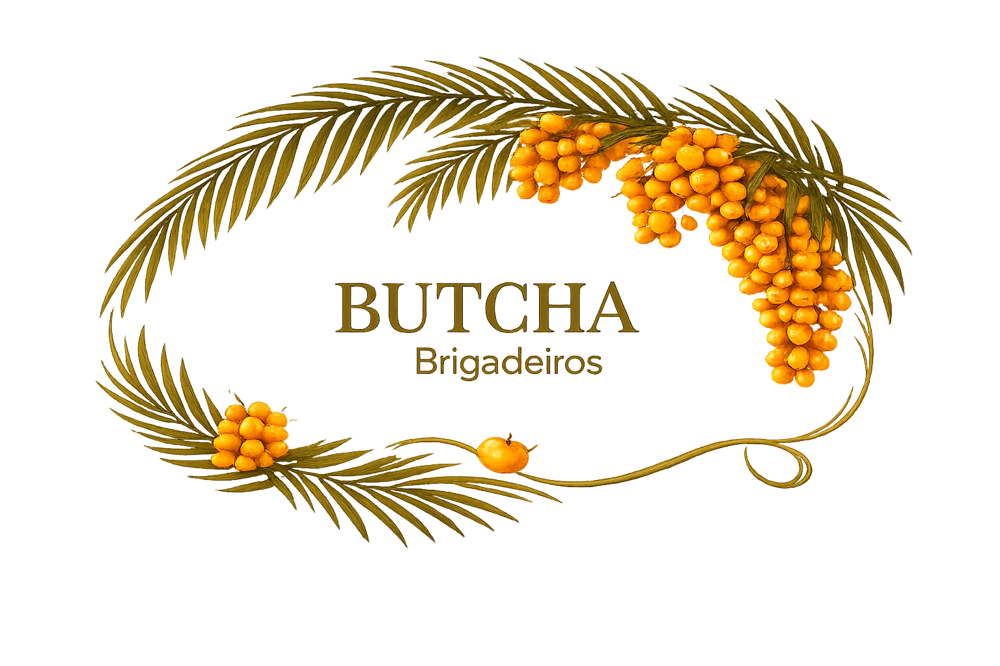
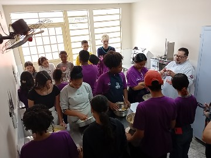

O AUTÊNTICO SABOR DO SUL EM CADA MORDIDA
Brigadeiros artesanais finos com alma do Butiá
Conheça a Butcha Brigadeiros
Inovação e Tradição: Uma experiência única que une a cremosidade do brigadeiro com o sabor doce e levemente azedo desta fruta tipicamente gaúcha.
Mais que um Brigadeiro
Um produto que valoriza a cultura local e celebra a biodiversidade do nosso estado. Perfeito para quem busca sabores autênticos e inovadores.
Ingredientes Selecionados
Frutos selecionados da melhor qualidade. Receita exclusiva, artesanal e sem conservantes.
Para Toda Ocasião
Ideal para lembrancinhas especiais, eventos corporativos, degustação e revenda. Um presente que marca momentos.
Uma jornada que começou na Escola StartUP
A Butcha Brigadeiros nasceu como um projeto inovador no Projeto Food Makers, transformando um desafio de empreendedorismo em uma marca de alto valor cultural.
Empreendedorismo e Impacto
Um projeto desenvolvido por alunos da Escola StartUp da rede Calábria, transformando ideias em realidade e gerando oportunidades.
Cultura Gaúcha
Celebramos a biodiversidade do RS através de uma experiência única e autêntica do sabor do butiá, valorizando nossas origens.
Projeto
Original
Escola
StartUP

Nossa História
A Butcha Brigadeiros nasceu como um audacioso projeto que transcendeu as paredes de sala de aula. O que começou como um incentivo ao empreendedorismo através do inovador Projeto Food Makers, rapidamente floresceu em uma marca de dar sabor e propósito à comunidade.
Nosso propósito vai muito além de produzir doces finos. Nós queremos apresentar uma autêntica experiência de valorização da cultura e culinária, usando insumos de altíssima qualidade. Tudo isso sempre feito pelas apaixonadas mãos de jovens empreendedores focados num belo futuro, com o suporte contínuo da rede Calábria.